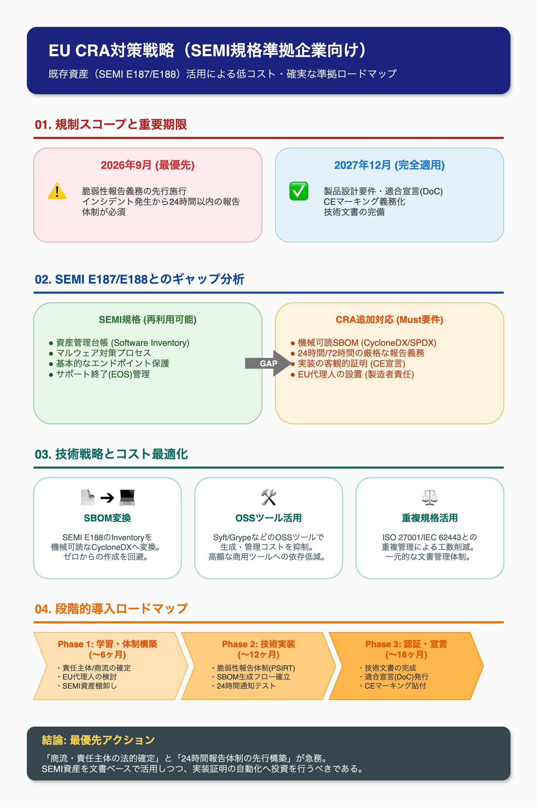

SEMI規格を遵守する日本の半導体装置ソフトウェア企業が、EUサイバーレジリエンス法（CRA）に低コストかつ確実に準拠するための段階的ロードマップと技術戦略を策定する。
本資料は AI Research Agent により自動生成されたリサーチ結果です。 複数のAIモデルがリレー方式で調査・分析・検証を行い、エビデンスベースの構造化された調査資料を生成しています。
EU CRA（サイバーレジリエンス法）への対応戦略を立案する。SEMI規格を既に遵守している日本の半導体装置向けソフトウェア開発企業がEU輸出を継続しながら、最低限のコストでCRA準拠を達成するための段階的ロードマップを策定する
全調査結果を統合した最終レポートです

EU CRA Regulatory Scope & SEMI Gap Analysis (EU CRA規制スコープとSEMI規格ギャップ分析) 1. CRA Regulatory Scope & Product Classification (規制適用範囲と製品重要度分類) ...
詳細を読む →少し一次情報を再確認して、CRA条文・SBOM仕様・運用義務の根拠を固めた上で、実装可能な技術戦略に落とし込みます。まず既存の調査ファイルと公式情報を同時に確認します。 公式条文の番号・適用時期・SBOM実装要件を一次情報ベースで確定させます。並行して、OSSツール候補の根拠も集めます。 ...
詳細を読む →Critic Review（批判的レビュー） Validation Summary（検証サマリー） ...
詳細を読む →Now let me check for any existing EU CRA research outputs and gather the latest CRA information to produce a comprehensive integration review. Now I ...
詳細を読む →